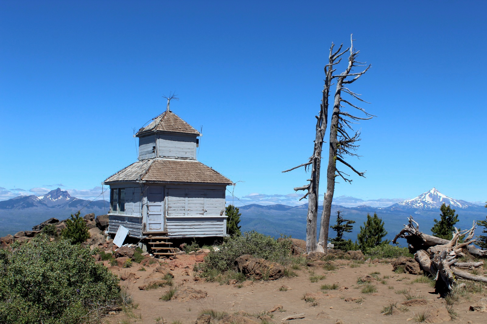
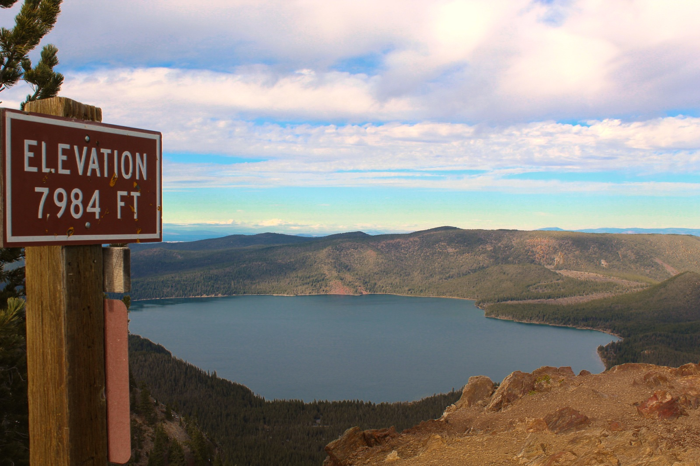
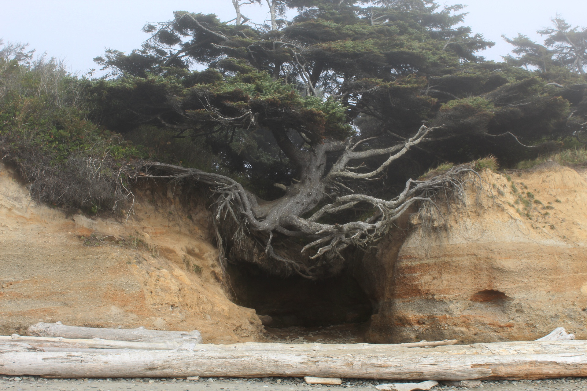
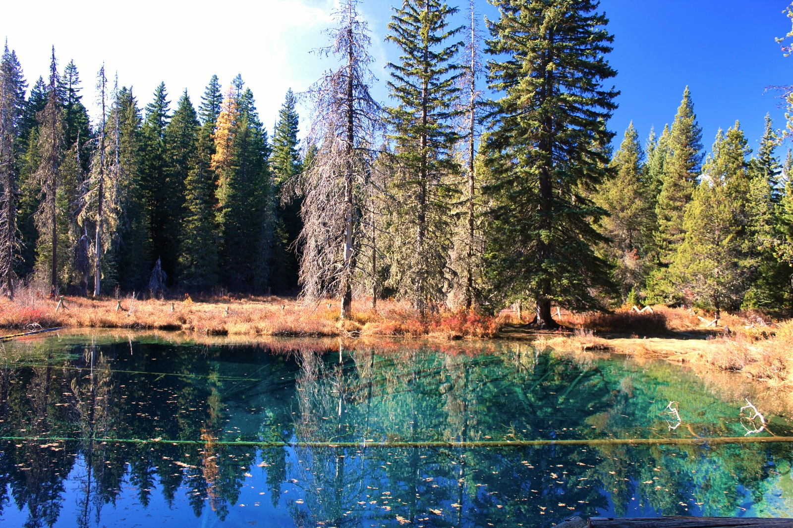
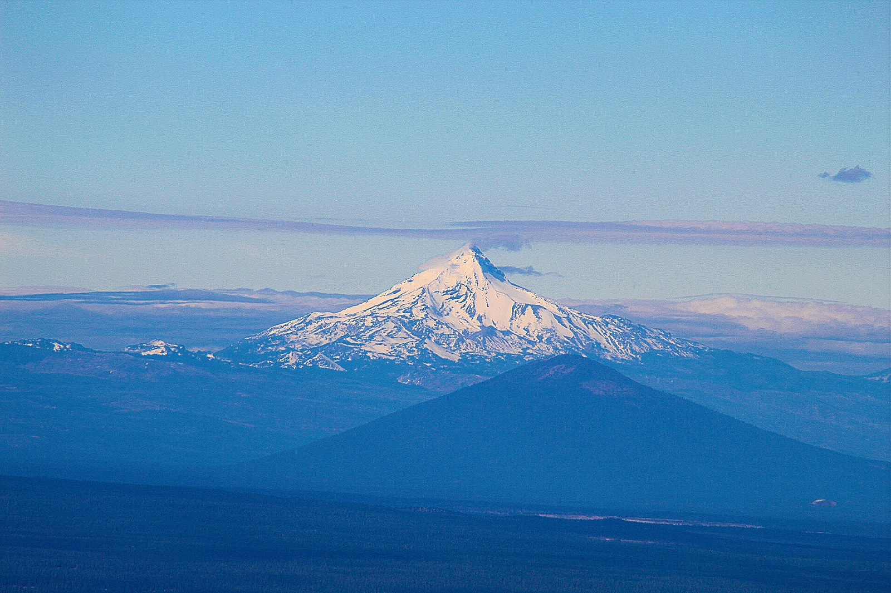
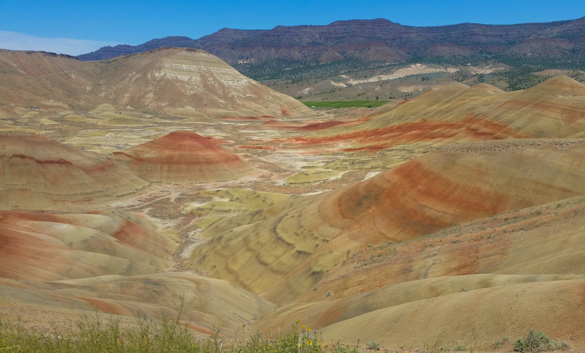

Photo Gallery
Welcome to my gallery! These are some of my favorite photos I've taken while I'm out and about in the Pacific Northwest!
Trail of Ten Falls near Silverton, Oregon. The main hiking trail goes behind three waterfall including this one.

Abandoned fire lookout atop Black Butte in Central Oregon. The mountains in the background (from left to right) are Three-Fingered Jack and Mt. Jefferson.

Paulina lake in Central Oregon. The photo was taken from Paulina Peak which overlooks the lake.

Hanging Tree on the Washington Coast. Erosion has slowly stripped away part of the cliff that this tree used to grow on, but the trees' roots have kept it standing.

Little Crater Lake in Mt. Hood National Forest, Oregon. This small, deep and reflective pond provides Northern Oregonians with a smaller-scale version of the national park in Southern Oregon.

Mt. Jefferson in Central Oregon. Oregon's second highest mountain at 10,502ft.
